Compare the surface with the lab. Then find the upwelling.
Post-processing of the wind growth & parent damping runs, with the 8 cm ak = 0.3 case: dye-mixing movies, cross-wind structure, parent + Cho surface evolution, comparisons with laboratory slope fields and Veron & Melville (2001), and upwelling contoured in the style of their Fig. 15.
Simulation fields only, unless labelled labWave-averaged (Lagrangian-mean) current and dyeCho ripples are one-way
Read with the caveats. The wind runs use a 12 × 12 cm periodic domain whose retained parent band is 2.4–4 cm along the wind and has cross-wind modes only at the 12 cm domain width. Cross-wind structure at that scale is set by the domain, not by physics. The Cho ripple field responds to the parent waves and surface current but does not feed back on either.
Passive dye, all wind-growth runs
Dye mixing
Box views (top surface and two side faces) of the wave-averaged dye, C* = Hc/M₀ on a log scale (1 = fully mixed). Saved 3D fields are every 0.5 s and are not interpolated in time; true aspect ratio. Runs that stopped early end at their last saved field.
Fixed reference (33×65×48), complete.Wind + parent loss (33×65×48), complete.Wind + parent loss, finer grid (65×129×96): 0.125 ms to wind age 18 s, 0.5 ms after.Measured wave history (33×65×48), stopped at 13.0 s elapsed.Wind + molecular loss (33×65×48), validity stop at 3.82 s (parent steepness 0.35).Fixed reference, finer grid; cancelled at 10.5 s elapsed.
Cross-wind (y–z) structure
Transverse dye structure
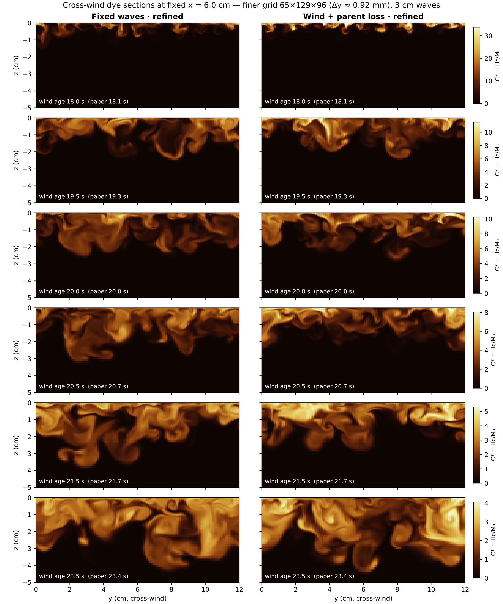
Fixed-x dye sections on the finer grid (Δy ≈ 0.92 mm) at the times shown in Wagner et al. (2023), Fig. 4, nearest saved field. Both runs in a row share one linear colour scale.
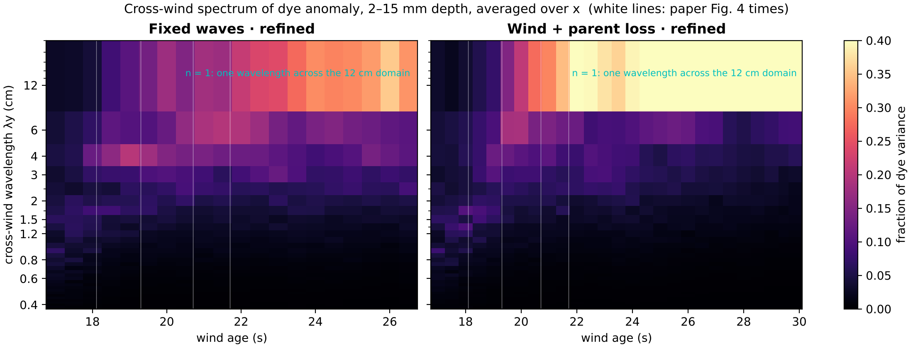
Cross-wind spectrum of the dye anomaly (2–15 mm depth, averaged along the wind). The first plumes are 1.2–1.7 cm apart at ages 17.5–18.5 s; variance moves to the domain-wide (12 cm) mode by about 20.5 s (wind) and 22 s (fixed). The first spacing shrinks with grid refinement (about 2.5 cm → 1.7 cm), so it is not converged.
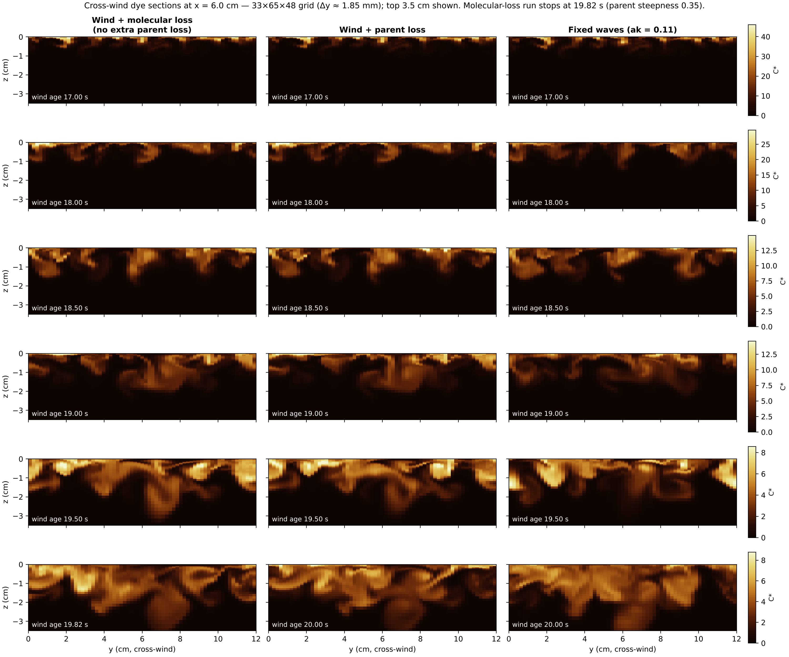
Standard grid: wind + molecular loss (no extra parent loss) against wind + parent loss and fixed waves. Early plume spacing is unchanged by the parent damping; after age 19 s the steeper parent waves mix deeper.
Parent + Cho surface, 512 × 512
Surface evolution
Wind + parent loss, wind ages 16–29.9 s. Laboratory frame, true vertical scale, 0.2× real time; surface saved every 0.02 s and linearly interpolated.Wind + molecular loss, ages 16–19.8 s. Ripple slopes exceed about 0.5 after age 18.6 s, beyond the intended range of the Cho model.
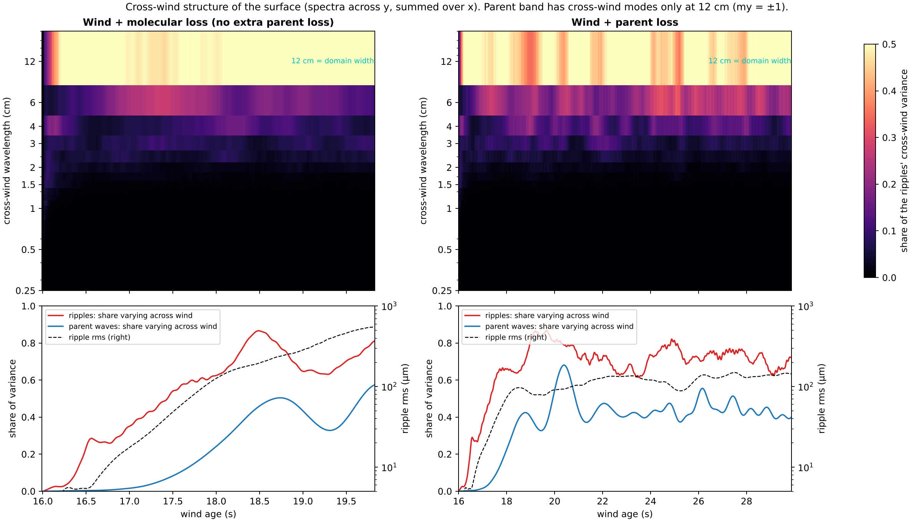
Cross-wind structure of the surface. Ripple variance that varies across the wind sits mainly at 12 and 6 cm: the parent band can vary across the wind only at the 12 cm domain width, and the ripples inherit that pattern.
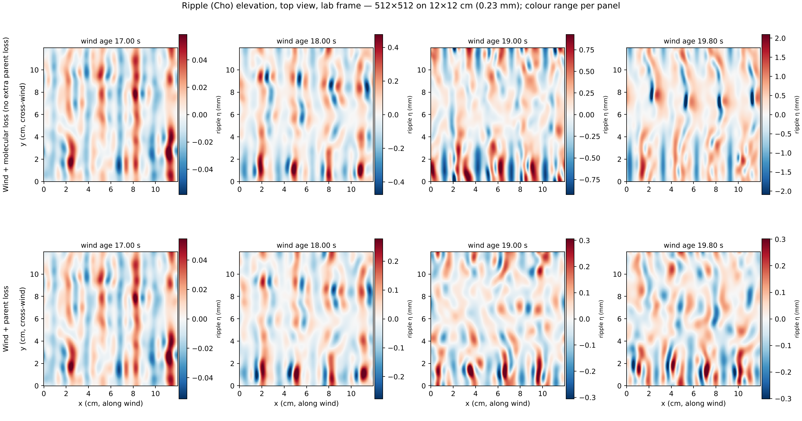
Ripple (Cho) elevation, top view, laboratory frame. Without the extra parent loss the ripples grow to about 6× the rms height of the parent-loss run by age 19.8 s.
Along-wind slope ηx
Laboratory comparison
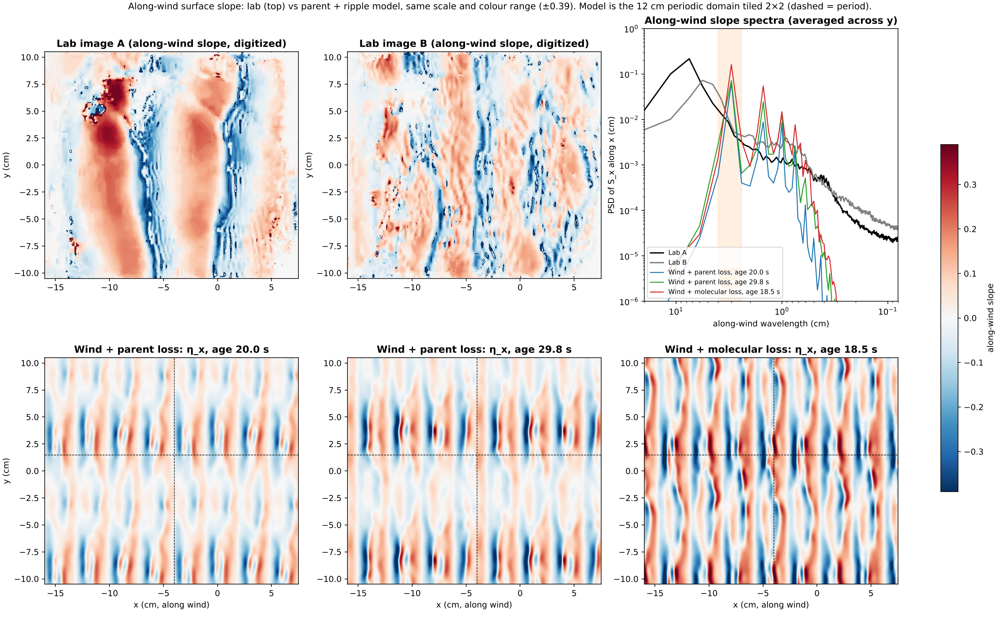
Laboratory along-wind slope images A and B (digitized from their colour scale, which saturates at ±0.39) against model ηx at the same physical scale; the model's 12 cm periodic domain is tiled 2 × 2. The lab's dominant along-wind wavelengths are 7.5 cm (A) and 5.6 cm (B); the model stays at 3 cm. At 0.2–1 cm wavelengths the lab slope spectrum is 10–100× the model's.
Case
Main along-wind λ (cm)
rms slope
Skewness
Cross-wind crest length (cm)
Lab image A
7.5
0.14
−0.44
>20
Lab image B
5.6
0.11
−1.0
≈6
Wind + parent loss, age 20 / 29.8 s
3.0
0.09 / 0.10
−0.55 / −1.0
5 / 8
Wind + molecular loss, age 18.5 s
3.0
0.15
−0.38
5
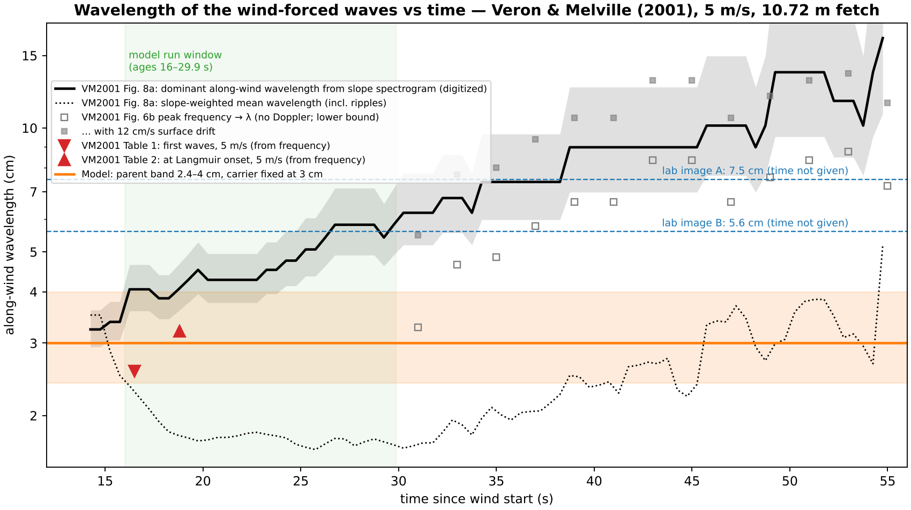
Wavelength of the wind-forced waves versus time, digitized from Veron & Melville (2001) Fig. 8a (slope spectrogram, 5 m/s, 10.72 m fetch). The waves appear at about 3.3 cm near 15 s and lengthen to about 6 cm by 30 s and 13 cm by 50 s. The frequency-based Table 1–2 values sit lower because of the Doppler shift by the surface drift. The model's parent band is fixed at 2.4–4 cm.
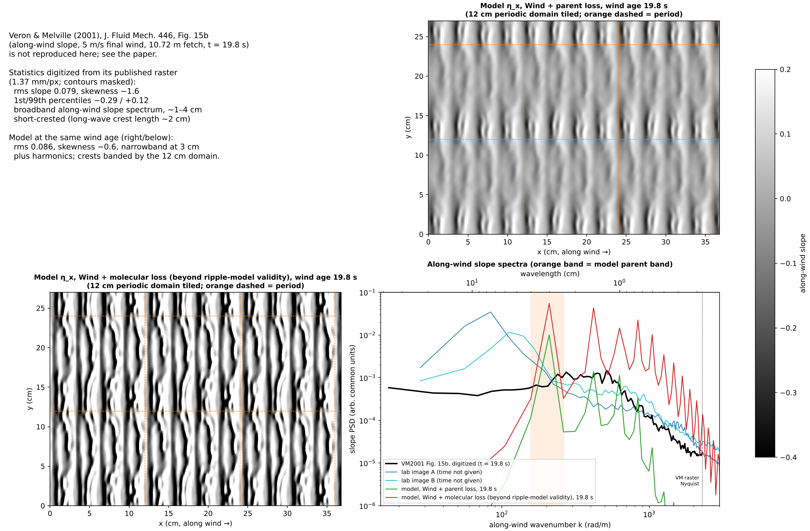
Model ηx at wind age 19.8 s and along-wind slope spectra, with statistics digitized from Veron & Melville (2001) Fig. 15b (not reproduced here; see the paper). The lab surface at 20 s is broadband (≈1–4 cm) and short-crested; the model is narrowband at 3 cm plus harmonics.
Grey: along-wind slope of parent + ripples (−0.4 … 0.2, as in their figure). White contours: upwelling. Their contours are surface temperature (warm, upwelled water); here the closest analogue is low surface dye (dye-free water reaching the surface). Contours of the wave-averaged vertical velocity w are shown for comparison.
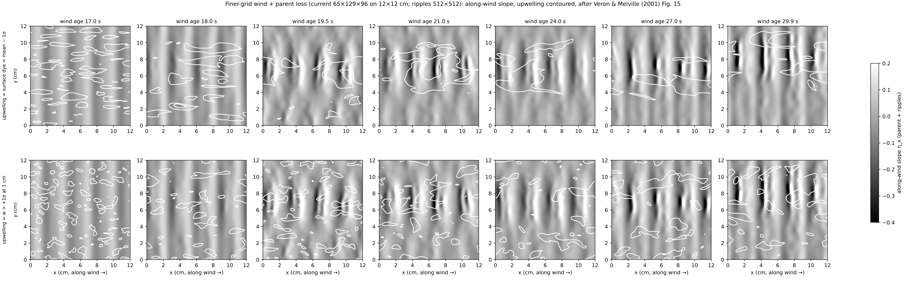
Finer grid (current 65×129×96). From about age 19.5 s the band of steeper, rougher waves sits on the upwelled-water region, as described in Veron & Melville's Fig. 15 caption: the correlation between local rms slope and low surface dye is +0.65, +0.69, +0.67, +0.62 and +0.59 at ages 19.5, 21, 24, 27 and 29.9 s. Ripple slopes reach 0.59 by the end.
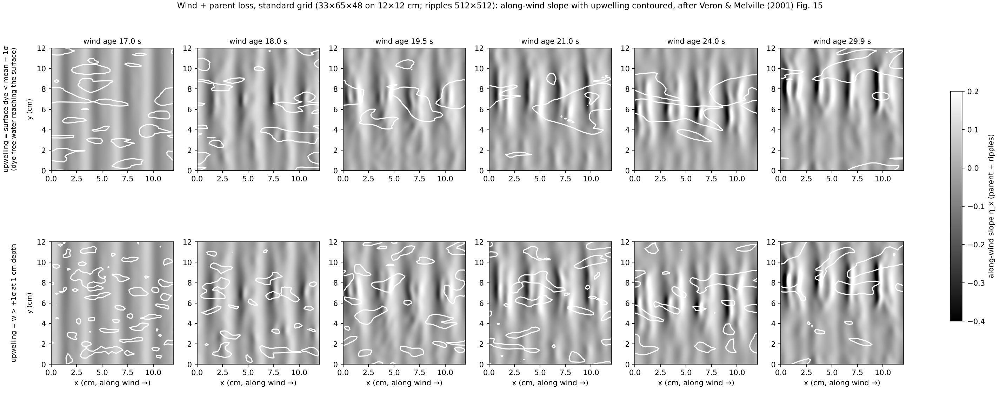
Standard grid (33×65×48): the same association, with correlation +0.57 to +0.74 after age 19.5 s. Because cross-wind modulation is limited to the 12 cm domain, there is room for only one rough band and one upwelling band.
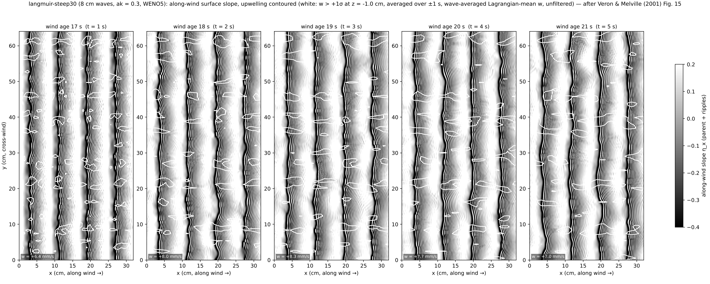
8 cm waves, ak = 0.3 (32 × 64 cm, WENO5): w > +1σ at 1 cm depth, averaged over ±1 s. Along-wind-uniform rolls grow to 22–29% of the w variance at 2 cm depth by 2–6 s (random noise gives 3%), but their cross-wind width is one 1 cm grid cell, so they are under-resolved.
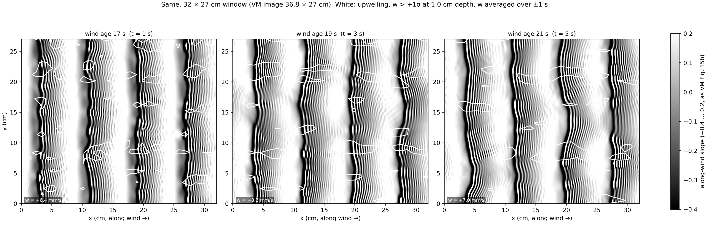
The same, cropped to a 32 × 27 cm window (Veron & Melville's images are 36.8 × 27 cm).
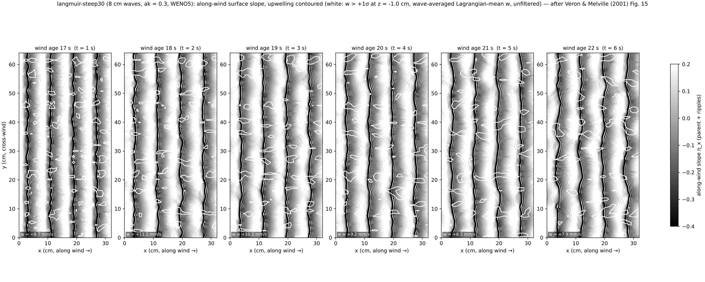
Instantaneous w contours for the same run.
Why no ak = 0.2 panel. The ak = 0.2, 15 s run uses fourth-order centred advection, which leaves the grid-scale seed noise in place: 62–85% of near-surface w variance stays at sub-4-cell scales, and its along-wind-uniform part stays at the random-noise level. Contours there would trace noise, not upwelling.